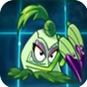

И так в игре растения против зомби много рстений но я выделю на этом сайте только самые сильные из них
Топ 5 самых сильных растений
- Покра

- ГОЛОВОУДАРНЫЙ Латук

- Ультимативный помидор

- Теневой горохострел

- Цветная капуста

Узнай больше!
Вот несколько полезных ссылок: